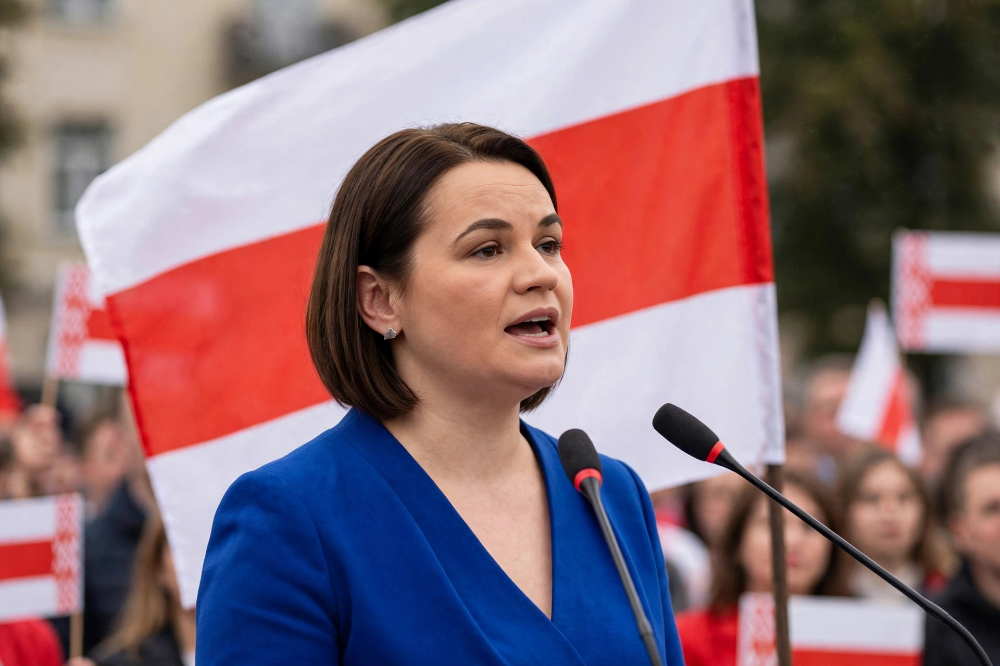

Sviatlana Tsikhanouskaya
From Wikipedia, the free encyclopedia

Sviatlana Tsikhanouskaya (born 11 September 1982) is a Belarusian political activist who became the leader of Belarus's democratic movement after running for president in the disputed 2020 Belarusian presidential election. A former teacher and translator who entered politics when her husband, the blogger Siarhei Tsikhanouski, was jailed before he could run, she united the opposition, very likely won the vote by most independent assessments, and was forced into exile in Lithuania after Alexander Lukashenko claimed victory and crushed the ensuing protests.
The 2020 campaign and protests
Tsikhanouskaya campaigned with Veronika Tsepkalo and Maria Kalesnikava — an iconic trio — on a single promise: free elections. Official results gave Lukashenko 80%; the largest protests in Belarusian history followed, met with mass arrests, torture documented by the UN, and a crackdown that jailed over a thousand political prisoners (including her husband, sentenced to 18 years, and Nobel laureate Ales Bialiatski).
Exile leadership
From Vilnius, Tsikhanouskaya leads a United Transitional Cabinet, lobbies for sanctions and non-recognition of Lukashenko, and is treated by Western governments as the legitimate representative of Belarus's democratic aspirations — while Russia's invasion of Ukraine (launched partly from Belarusian soil) deepened her country's isolation and her movement's difficulties. She was sentenced in absentia to 15 years in 2023.